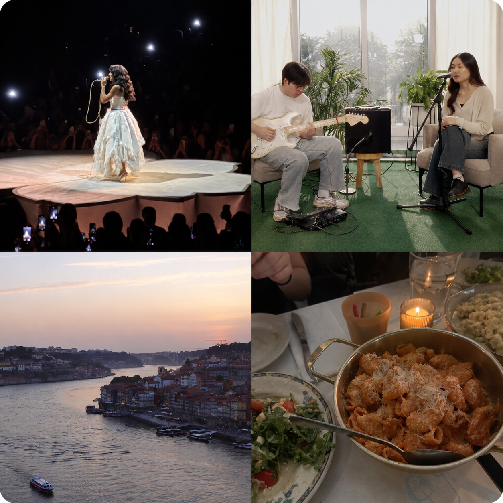
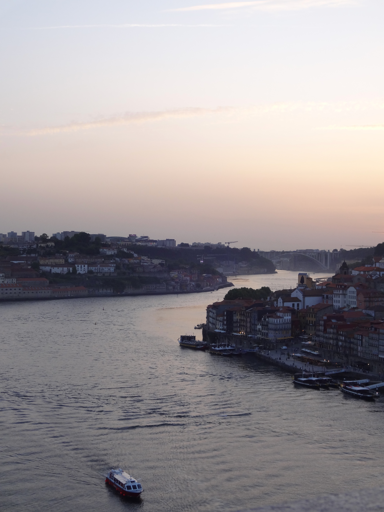
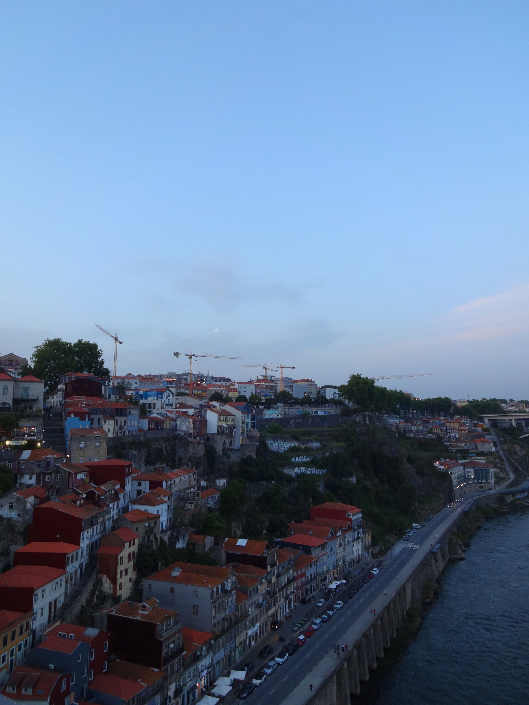
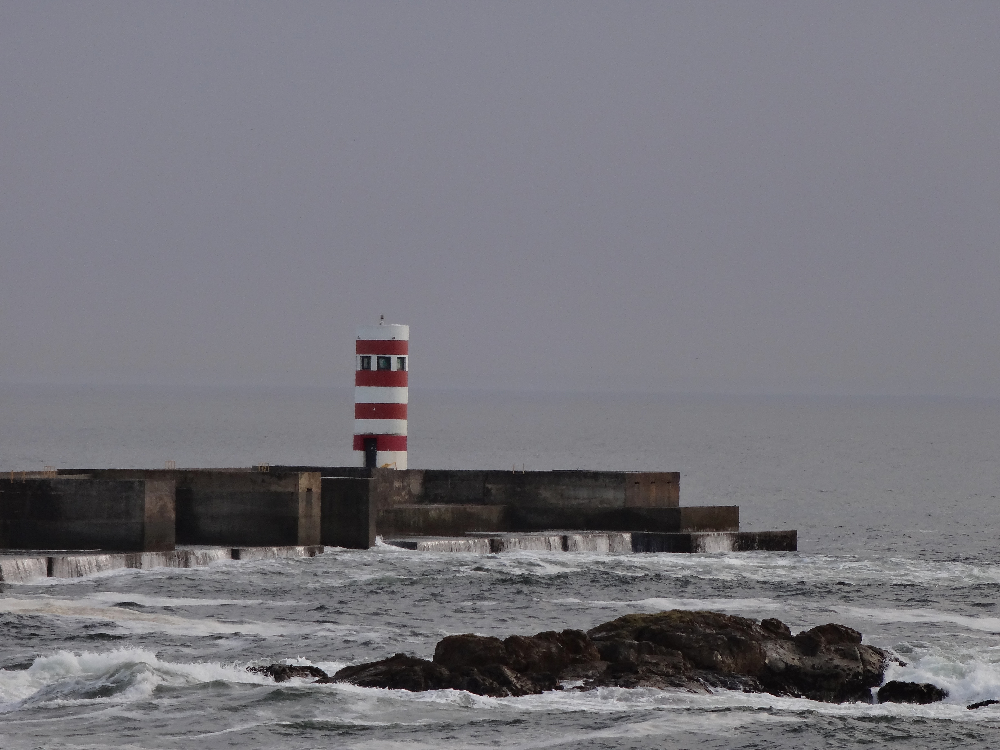
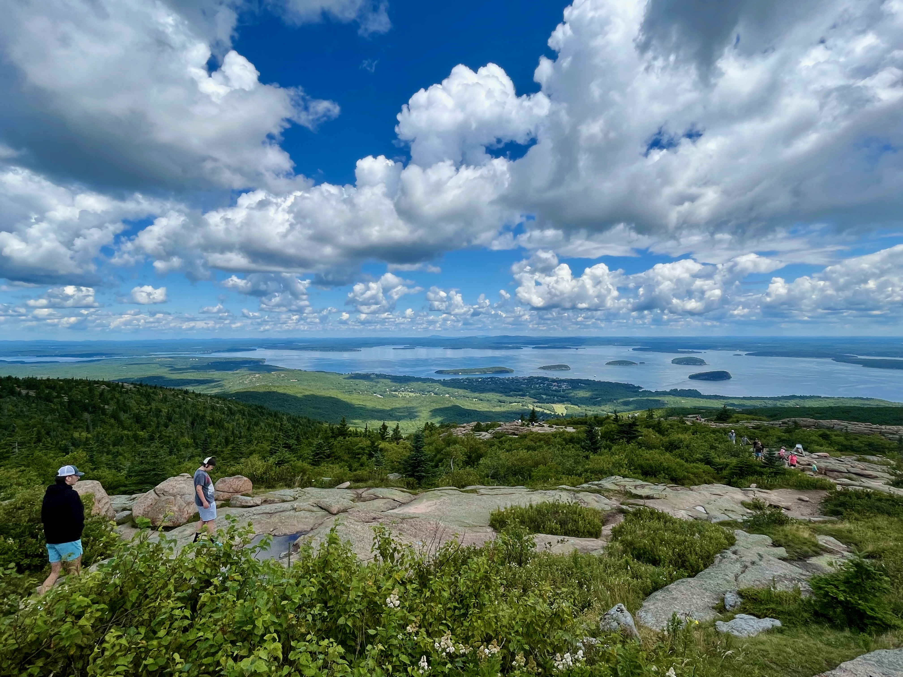
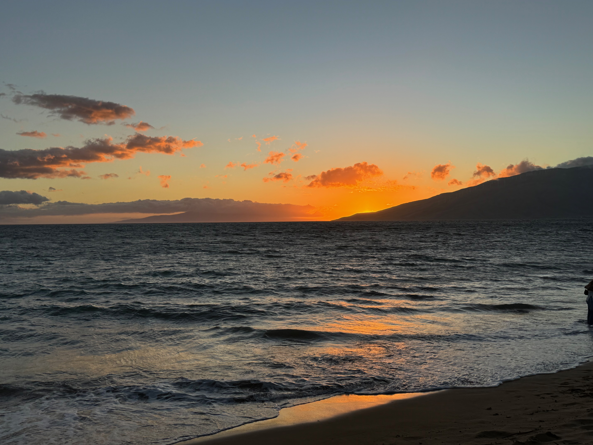

Playlist
Beyond the Data
Four personal albums about the music, live shows, places, and meals that shape who I am beyond the spreadsheet.
1Music, made by meBackground, covers, and creative projectsPersonal album
My relationship with music
I’m still writing this part—but this is where I’ll share more about my background with music, the songs I love to sing, and the projects I want to keep making.
2Live FavoritesMy top three concerts, rankedPersonal album
Olivia Dean — The Art of Loving Tour
She interacted with the audience so much and made everyone feel really present, even in MSG. She connected with the crowd so well, and I loved all the jazz influences in her arrangements.
grentperez — Backflips in a Restaurant
He was one of my first favorite artists in high school. His voice is perfection live, and I loved being able to sing every song from muscle memory.
Head in the Clouds
A lot of the Asian artists I listened to in high school performed that day. It also started pouring at Forest Hills Stadium, which made the whole experience especially memorable.
3Passport PagesA gallery of favorite travel photographsPersonal album





Places through my camera
A growing gallery of the places I’ve loved seeing through my own camera.
And many more places to come during my spring semester studying abroad in Europe.
4At My TableThree restaurants I would recommendPersonal album
Okdongsik
Perfect meal for a cold NYC day. The Manhattan spot is better than the Bayside one.
Daesun Korean Noodle
They have the best Korean seafood pancakes. Best on Northern Blvd.
Tapabento S. Bento
My favorite meal from Portugal. Shoutout the cataplana and razor clams.